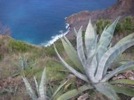
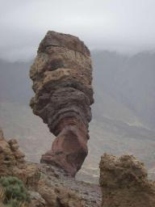

Jan Haring.nl - De wereld om met een Jan Haring - Joost Jager & Ilse Wintermans
|
|


|
La Gomera
» exacte locatie
 Afgelopen woensdag hadden we het even moeilijk... na bijna vier weken
op dezelfde ankerplek gingen we weer varen! De boot was een grote
kluszooi en het heeft ons een dag gekost alles zeilklaar te maken. Het
was echt lang geleden dat we hadden gevaren maar eenmaal op zee was
het weer erg relaxed (heerlijk, een dagje niet klussen). Onderweg
hebben we kleine walvissen gezien, erg mooi gezicht! La Gomera is een
erg mooi, groen en vooral ontoeristisch eiland. De sfeer in het stadje
San Sebastiaan is goed en ze hebben toch nog wat handige winkels. De
afgelopen dagen hebben we ons vermaakt met de watermaker uit elkaar
halen en ons 'teakdek' wit verven. De watermaker doet het niet meer.
Joost heeft 'm helemaal uit elkaar gehaald en gebeld met de fabriek en
nu gaan we 'm opsturen naar Amerika. Wel balen dus. Gelukkig hebben we
nog een extra waterzak aangesloten en kunnen we genoeg water meenemen
voor deze oversteek. Er liggen hier ook een paar Nederlandse boten en
sommigen liggen hier een paar jaar. Een daarvan ligt bij ons aan de
steiger en nodigde ons uit om snert te komen eten! Dat was erg lekker
en gezellig. De Duitse boot die we in Marokko hebben ontmoet (Inka en
Arne) is hier ook, dat is leuk. Vandaag hadden ze met nog twee Duitse
stellen een auto gehuurd maar ze kregen een grotere auto dus we konden
mee. Zo hebben we erg veel van dit prachtige eiland gezien. Midden op
het eiland is een hoogvlakte met een enorm woud met veel groene
grillige bomen. Ook hebben we veel bananenbomen gezien, ik snap nu
waarom de bananen krom zijn, want ze groeien naar boven, naar de zon
in een bochtje. Onderaan de tros groeit een grote bloem. Ze hebben
hier weinig vlakke stukken en om het land toch te kunnen verbouwen
hebben ze veel terrassen gemaakt, een mooi gezicht. Bij een winkel
stond een papegaai in een kooitje en als je een soort wals ging
fluiten ging 'ie op de maat 'dansen', erg grappig! Van 'hola' maakte
hij 'olala'. Al met al een mooie tocht met heel veel bochten! Een laag
drukgebied zit ons nu nog even in de weg maar het ziet er naar uit dat
we deze week toch echt gaan vertrekken naar de overkant...
Afgelopen woensdag hadden we het even moeilijk... na bijna vier weken
op dezelfde ankerplek gingen we weer varen! De boot was een grote
kluszooi en het heeft ons een dag gekost alles zeilklaar te maken. Het
was echt lang geleden dat we hadden gevaren maar eenmaal op zee was
het weer erg relaxed (heerlijk, een dagje niet klussen). Onderweg
hebben we kleine walvissen gezien, erg mooi gezicht! La Gomera is een
erg mooi, groen en vooral ontoeristisch eiland. De sfeer in het stadje
San Sebastiaan is goed en ze hebben toch nog wat handige winkels. De
afgelopen dagen hebben we ons vermaakt met de watermaker uit elkaar
halen en ons 'teakdek' wit verven. De watermaker doet het niet meer.
Joost heeft 'm helemaal uit elkaar gehaald en gebeld met de fabriek en
nu gaan we 'm opsturen naar Amerika. Wel balen dus. Gelukkig hebben we
nog een extra waterzak aangesloten en kunnen we genoeg water meenemen
voor deze oversteek. Er liggen hier ook een paar Nederlandse boten en
sommigen liggen hier een paar jaar. Een daarvan ligt bij ons aan de
steiger en nodigde ons uit om snert te komen eten! Dat was erg lekker
en gezellig. De Duitse boot die we in Marokko hebben ontmoet (Inka en
Arne) is hier ook, dat is leuk. Vandaag hadden ze met nog twee Duitse
stellen een auto gehuurd maar ze kregen een grotere auto dus we konden
mee. Zo hebben we erg veel van dit prachtige eiland gezien. Midden op
het eiland is een hoogvlakte met een enorm woud met veel groene
grillige bomen. Ook hebben we veel bananenbomen gezien, ik snap nu
waarom de bananen krom zijn, want ze groeien naar boven, naar de zon
in een bochtje. Onderaan de tros groeit een grote bloem. Ze hebben
hier weinig vlakke stukken en om het land toch te kunnen verbouwen
hebben ze veel terrassen gemaakt, een mooi gezicht. Bij een winkel
stond een papegaai in een kooitje en als je een soort wals ging
fluiten ging 'ie op de maat 'dansen', erg grappig! Van 'hola' maakte
hij 'olala'. Al met al een mooie tocht met heel veel bochten! Een laag
drukgebied zit ons nu nog even in de weg maar het ziet er naar uit dat
we deze week toch echt gaan vertrekken naar de overkant...

|
|
|

Modelleren met aardappel
» exacte locatie
We hebben nu een zeer speciaal stuk 'teak'dek op de boot maar de
kajuitrand is weer waterdicht en hopelijk voor een lange tijd
roestvrij. Het kitten hebben we op een voor ons nieuwe manier gedaan.
Joost ging voor met afplakken en ging kitten en ik volgde met een stuk
aardappel om zijn kitnaden meteen mooi glad te strijken en vervolgens
de tape er weer af te halen want dat mag niet langer dan een half uur
blijven zitten. Dat modelleren met aardappel ging niet direct van een
leien dakje en ik zat dan ook gauw onder de kit. Uit voorzorg nog wel
handschoenen aangetrokken maar het kwam in mijn haar, op mijn armen en
m'n benen. Nee, dat modelleren met aardappel zal mijn hobby niet
worden maar het resultaat mag er zijn. Nu nog een verfje er over in de
kleur van de kajuit en klaar is de klus. We wilden vandaag wel verder
klussen maar doordat de wind is gedraaid en we zijn aan lager wal
geraakt. Dat geeft een behoorlijk schommelende boot zodat je weinig
comfort hebt en zelfs lezen en koken lastig wordt. Een paar dagen
terug hebben de autoriteiten hier een polyester kano vastgeknoopt aan
betonblokken op de bodem. Nu drijft dat ding dus ons volledig in de
weg. Op en gegeven moment konden we 'm zelfs bijna aanraken! Dat ding
slokt aardig wat ankerruimte op en we hebben uiteindelijk ons anker
iets verderop uitgegooid. Dat was lastig, want we wilden niet tegen
Dingo of Salland (Belg) aankomen, en ook niet tegen de kano en de gele
tonnenrij. Na vier pogingen liggen we weer aardig. Die kano komt
trouwens uit Afrika. In drie dagen schijnen ze zo'n polyester kano te
kunnen bouwen met wat houten spanten en een miniscuul roertje. Daar
gaan dertig mensen in die € 1000,- per persoon moeten betalen. Ze
krijgen dan een GPS mee met een coordinaat waar ze heen moeten varen.
Ze gaan blijjkbaar met meer kano's tegelijk waarvan een met een motor
die de rest meetrekt. Die andere kano's waren van hout en zijn hier
direct gesloopt. Nou, zeker geen pretje op zo'n boot. Je zit met
dertig man superdicht op elkaar en golven kunnen er gewoon inslaan.
Dat is 's nachts erg koud want zoute kleren worden klam. Ze hebben er
13 dagen over gedaan waarvan ze de laatste 4 geen water meer hadden.
Vervolgens komen ze hier aan en worden door de kustwacht van zee
geplukt ('s nachts, zodat de toeristen het niet zien). Ze krijgen hier
medische hulp, slapen in een grote tent en worden vervolgens op het
vliegtuig terug naar Afrika gezet. Al die moeite voor niks... Sommigen
hebben blijkbaar wel geluk gehad, want je ziet hier wel wat Afrikanen
horloges en 'gouden' kettingen verkopen op terrasjes. Ondertussen
begint het bij ons behoorlijk te kriebelen voor de grote oversteek.
Hopelijk neemt de wind wat af de komende dagen zodat we nog naar het
mooie la Gomera kunnen. Nog een paar laatste klussen en dan kunnen we!
Ik weet niet of ik het al had geschreven maar we gaan toch weer voor
ons oorspronkelijke plan om rond de wereld te zeilen! Ik denk dat we
gaan aansturen op Martinique maar het kan ook een ander eiland daar in
de buurt worden. Michel (van Salland) heeft daar 2 1/2 jaar gecharterd
en heeft ons over heel wat mooie plekjes verteld.
|
|
|
Een weekje later...
» exacte locatie
Het is alweer een week geleden dat ik wat op de site heb gezet en dat
komt omdat we heel hard aan het klussen zijn. Gelukkig gaat het nu
toch echt de goede kant op met onze kajuitrand. We zijn er de hele
week fulltime mee bezig geweest (lees ook zaterdag en zondag ;-)) maar
nu weten we wel dat ons kajuitdak staat als een huis en voorlopig niet
weg roest en dat het staal onder het teakdek er nog niet heel ernstig
aan toe is. Er komt namelijk zout water onder het teakdek door als we
varen en dat is niet zo best. Waarschijnlijk nog een jaar en dan gaan
we het er volledig afslopen. We hebben de eerste houten rand rondom
het kajuitdak er af gehaald en Joost is twee dagen met beitel, hamer,
schroevendraaier, krabber, enz, bezig geweest om al het roest weg te
bikken. Op de eerste foto hebben we fosforzuur (osfo) langs de rand
gekwast en een nachtje gelaten. Dat zorgt ervoor dat de laatste
plekjes roest ook weg gaan. Daarna goed schoonmaken en voor het eerst
hebben we met twee-componentenverf gewerkt. De volgende dag hadden we
opeens weer aan een kant kleine roestplekjes! Weggewerkt met de
krabber maar de volgende dag kwamen ze weer terug. Weer weggebikt en
toen ging het goed! Op de laatst foto zie je hoe mooi wit onze rand nu
is en zie je de houtjes liggen waarmee we het gat weer gaan dichten
(en veel kit natuurlijk). Die latjes was ook wat.. .goedkoop hout
gekocht en insmeren met epoxylijm om ze waterdicht te maken. Dat werkt
ook met twee componenten en vanwege een golfje schoot Joost wat uit
met de hardener.... Na een kwartier verven begon het spul in het
plastic(!) bekertje ineens heet te worden en te dampen en ineens was
het keihard! Daarna hebben we het goedje voorzichtig gemengd en dat
ging veel beter. In Lissabon hadden we via een zeilmaker een
slingerzeiltje (zodat je niet uit je bed valt tijdens het zeilen)
gekocht en hij had er vast ogen voor ns ingeslagen. Wij het mooi
opgehangen en uitproberen. Ik lag heerlijk! Joost wilde ook maar
sprong er wat te enthousiast in en rolde het bed af met slingereil
erbij, ogen gescheurd.... Dat is niet handig dus ik ben het zeiltje
gaan verstevigen met behup van de speedy stitcher. Superhandig ding om
door dikke stoffen heen te prikken en ook handig om voor nood de
zeilen mee te kunnen repareren. De buiskap heb ik er ook helemaal mee
ogelapt dus die kan hopelijk ook weer even mee. De kluslijst voor de
oversteek begint eindelijk korter te worden. Twee bekende boten zijn
al weg. Dan begint het toch te kriebelen. Wij willen toch ook wel
binnen een dag of tien vertrekken maar niet voordat we La Gomera
hebben aangedaan. Wel gek dat het nu Sinterklaasavond is.Het is hier
zomers warm (verf droogt lekker snel) en dat past niet echt bij het
Sint-gevoel. Maar we gaan zo wel lekker pepernoeten eten!
|
|
|
Grote klus
» exacte locatie
Ze zijn hier erg fanatiek met de boeien. Vandaag hebben ze nog een
hele rij nieuwe neergelegd! Blijkbaar willen ze dat je er achter
ankert maar nu liggen er een paar zo dat als de wind draait we er
waarschijnlijk tegenaan gaan komen....We hebben gezien dat ze met een
ketting aan iets heel zwaars hangen (stuk beton ofzo) dus hopelijk
enigszins flexibel. We zien het wel. Eigenlijk mag je hier alleen voor
anker liggen als je de kant op gaat, dus ik denk dat ze van alle
'illegalen' hier afwillen ;-). Toen mijn moeder en haar man hier
waren hebben we mooi met hun huurauto vast wat eten voor de oversteek
ingeslagen. Alle etiketten van de blikken losgeweekt omdat
kakkerlakken nou eenmaal dol zijn op papier, karton en vooral
op....lijm. Daar kunnen ze een pakketje eitjes leggen want als hun
kindjes dan uitkomen hebben die meteen overheerlijk lijmvoer. Sinds we
in Marokko vele kakkerlakker op straat hebben zien lopen zijn we een
stuk voorzichtiger geworden. Schoenen laten we in de bijboot staan en
alle verpakkingen gaan er af. Dat scheelt ook meteen ruimte en je bent
direct een paar zakken afval kwijt. Wel handig is om op die blikken
met merkstift te schrijven wat er in zit en tot hoe lang goed (dat
staat, heel handig, op het etiket). Groente en fruit spoelen we af.
Boodschappen opruimen wordt zo een heel karwei. Michel, onze Belg, had
nog wat handige tips. Eieren kun je langer goed houden als je ze 5
seconden in kokend water hebt gehouden en spekblokjes schijn je goed
te kunnen houden in een mengsel van water (1 liter), suiker en zout
(beiden 120 gram) in een goed afgesloten bak. Dit moet je samen koken
tot alles is opgelost en dan afkoelen. Belangrijk is dat alles in het
vocht zit. We gaan het gewoon uitproberen, wel zo lekker om onderweg
een carbonara te kunnen maken! Voor gebruik de spekjes wel goed
afspoelen. Verder zijn we vandaag begonnen aan de GROTE klus. Het
irriteerde ons al een tijd maar dankzij Michel weten we nu wat we
moeten doen. De rand van het kajuitdak roest heel erg en om het goed
weg te krijgen zijn we nu de teakrand rondom aan het weghalen. Dat
lukt aardig en de ernstigheid van het wegroesten lijkt mee te vallen.
Het rotste werk is vervolgens alle roest weg te bikken met een hamer
en een beitel. Dan goed schuren en speciale epoxy (twee-componenten)
erop. Waarschijnlijk zijn we hier wel een dag of tien zoet mee maar we
zijn bang dat de roest anders erg uit de hand gaat lopen met vier
weken op de oceaan. Dingo is gisteren hier aangekomen en dat hebben we
gevierd met een BBQ. Het was erg leuk elkaar weer te zien. Morgen gaan
ze de kant op (zij liggen hier dus wel legaal) omdat ze nieuwe
antifouling (verf tegen aangroei) gaan aanbrengen. Ook een hele klus.
Ik merk wel dat het klussen hier relaxter is. Het regent zo goed als
nooit en het is lekker warm! 's Avonds ga je niet door omdat het dan
donker is dus heb je tijd om te socializen en te praten over de
reisplannen. Toch wel de wereld rond?
|
|
|
Wat een dag
» exacte locatie
Tjonge jonge, als je houdt van afwisseling dan moet je echt een boot
kopen. Ik zal aan het begin beginnen, dat was gisterochtend toen de
Belgische solozeilende schipper van de Salland bij ons aan boord kwam
om een praatje te maken... en het aantal keuzes dat we kunnen maken
weer verder vergrootte. Volgens hem was voor een "korte" reis van drie
jaar het rond de wereld varen echt teveel gejakker. En bovendien doe
je dan alle plekken aan die iedereen die die route vaart aandoet met
weinig tijd voor echt gekke omwegen. De kleine antillen waren volgens
hem de Middellandse zee van de Amerikanen en daardoor was iedereen uit
op je geld. Ook goedkoop klussen op Trinidad was iets van 15 jaar
terug. Zelfs iets als de San Blas eilanden scheen al weer afgeladen te
zijn met charterboten. Nee, wat we moesten doen was niet die 30000
mijl rond de wereld afleggen, maar naar bijvoorbeeld Guatamala gaan.
Veilig, mooi, authentiek. En daaraan voorafgaand naar Brazilie,
goedkoop leven, beter klimaat dan de Caribean. Hij was zelf overigens
op al die plekken geweest. Daarna hebben we nog over ons teakdek
gesproken. Hij had ook een teakdek gehad en heeft ons foto's laten
zien van wat er gebeurt als we niet snel actie ondernemen. Hele
stukken metaal rond het kajuitdak die volledig weggevreten waren. Auw.
We mochten eigenlijk niet weg voordat we in ieder geval iets aan die
rand hadden gedaan. De manier waarop we dat wilden doen was ook
helemaal fout. Hij had het ook allemaal geprobeerd, maar uiteindelijk
was epoxymastic het beste dat er was. Wondermiddelen bestaan niet,
maar dit was veel beter dan wat wij erop wilden smeren. Nou, weer wat
stof tot denken. 's Middags zijn we naar de kant gegaan om eens te
rond te vragen naar die epoxymastic. En om voor het eerst deze reis
naar de Chinees te gaan! In het kader van reserves opbouwen voor de
oversteek hebben we "eat as much as you like" gedaan voor 6.95 euro.
En daar hadden we later spijt van. We ontploften zowat. We zijn de
bijboot ingerold en teruggemotord naar Hafskip. Maar daar wachtte ons
een verrassing. Er was een enorme deining komen opzetten waardoor onze
bijboot behoorlijk ruig over de golven ging en toen we dichter bij
kwamen zagen we een figuur op onze voorpunt staan. Het bleek de
solozeiler te zijn die onze ankerlier aan het redden was. De
zogenaamde kettingklauw (die perfekt zou zijn volgens de
watersportwinkel) was spontaan van de ketting gefloept en de boot hing
nu met zijn volle gewicht te rukken aan alleen ons mooie ankerliertje.
Heel slecht. Ons is nu een speciale knoop geleerd met dezelfde functie
als de klauw maar dan wel betrouwbaar. Toen bleken we ook nog op een
vlak onder water liggend boeitje te drijven wat continu lawaai maakte
en ook gevaarlijk is bij eventueel starten van de motor. Dat boeitje
hebben we maar baldadig losgesneden met een mes vanuit de bijboot
(gelukkig net niet de bijboot lekgeprikt in die golven). Een
"ongelukje", anders had onze schroef het misschien wel gedaan. De rest
van de nacht niet echt kunnen slapen door het geslinger (in combinatie
met twee kilo Chinees in onze buiken) en toen ging de wind ook nog
eens draaien waardoor we in de buurt kwamen van een serieuze boei. Een
boei die ze er notabene vandaag neergelegd hadden, terwijl wij al mooi
geankerd lagen. Vandaar dat ik nu anker/boeiwacht aan het houden ben.
En dit verhaaltje typ tussen het wacht houden in. Tja, al met al zijn
de kaarten weer flink geschud maar eigenlijk is dat ook wat zo'n reis
leuk maakt.
|
|
|
In dubio
» exacte locatie
Na het bezoek van mijn moeder en haar man zijn we weer aan het klussen
geslagen. Ze hebben lekker veel spullen voor ons meegenomen (ze zijn
net binnen hun kilo's gebleven voor het vliegtuig) die hier niet of
nauwelijks te krijgen zijn. Bestellen vanuit Barcelona? Reken maar op
20 dagen...We zijn dus superblij met alle spullen die onze ouders voor
ons gekocht en vervoerd hebben, thanks! Vandaag hebben we voor het
eerst water kunnen proeven uit de 'Hafskip' bron. Joost heeft de
watermaker kunnen aansluiten en hij doet het, alleen nog traag,
waarschijnlijk moeten we het membraam schoonmaken maar daar wordt aan
gewerkt. Echt superfijn om te weten dat we op de oceaan straks niet
zonder water komen te zitten. Tussen het klussen door nemen we een
duik in het water, heerlijk, dat was de bedoeling. Voor het eerst de
zwemband kunnen testen en die bevalt prima. Wat wel gek is is dat het
warm en zomers weer is maar dat het om 18:30 uur donker is.
Ondertussen hebben we het veel over onze reisplanning. Tot nu hebben
we vaak het gevoel gehad van haast. Dat hoelang je ergens kon blijven
niet af hing van 'het is leuk hier, we blijven langer' maar meer van
'er is goede wind, we moeten verder'. Dat geeft te denken...Willen we
het vanaf nu rustiger aan gaan doen en een jaar langer in het
Caribisch gebied blijven? Dat betekent of groot rondje Atlantic van
twee jaar of een jaar later Panama door. Dat laatste heeft de
consequentie dat we de boot moeten verkopen in Nieuw-Zeeland of
Australie of door te zeilen en een jaar later thuis te komen (4 jaar).
Dat laatste vinden we wel erg lang maar we weten ook niet of je je
boot daar handig kunt verkopen en willen we de boot wel verkopen? We
kunnen ons ook houden aan ons oorspronkelijke plan van in drie jaar de
wereld rond maar dat is misshien wel erg veel zee in relatief korte
tijd...Lastig om daar over na te denken maar het is wel handig te
bedenken op welk (ei)land aan de overkant we wille gaan aansturen.
Gelukkig hebben we nog een paar weken en we liggen hier goed voor
anker met de beste wifi-verbinding tot nu toe!
|
|
|
Tenerife
» exacte locatie
Erg lang zijn we niet op Lanzarote gebleven, want we hadden een
afspraak met familie op Tenerife. Er zat weer minder gunstig weer aan
te komen, dus zijn we na een nachtje al weer meteen vertrokken. Twee
rustige nachten doorgezeild en toen lagen we in de haven van Los
Gigantes op Tenerife. Heel mooi gelegen onder gigantische rotsen
(vandaar de naam), maar verder was het een redelijke cultuurschok. Na
al die avonturen in Marokko en op zee kom je ineens in een
supervakantieoord terecht. Overal veel te dikke of veel te dunne
spierwitte Engelse toeristen die verveeld met hun heuptasjes om langs
winkeltjes met uitsluitend troep slenteren. Restaurants die allemaal
dezelfde menukaart hebben met tien gerechten in zes talen voorzien van
verkleurde foto's. Opdringerige mannetjes die je mee willen nemen op
de boot voor all-inclusive dolphin en whale watching met 100% money
back guarantee indien geen dolfijnen gezien. We zijn zelfs nog een
dagje in het all-inclusive hotel waar onze familie verbleef geweest en
hebben daar de vegeterende zwembadgasten geobserveerd. Nee, dit gaat
ons type vakantie nooit meer worden. Maar wat wel heel positief is van
Tenerife is het weer! Eindelijk zitten we in een klimaat waar je tot
's avonds laat in je korte broek kan lopen. Het water is hier prachtig
blauw en in het binnenland is de natuur indrukwekkend. Voor onze
familie hebben we een eigen whale-watching and fishing trip
georganiseerd naar Los Cristianos waar we nu voor anker liggen. Helaas
zagen wij dan onderweg weer geen walvissen en ook het vissen heeft
niets opgeleverd. Blijkbaar doen die toeristenboten toch iets
speciaals. Voor ons staat de komende tijd in het teken van relaxen en
de boot klaar maken voor onze volgende tocht. In het kielzog van
Columbus de 2800 mijl naar de overkant van de oceaan afleggen.

|
|
|
Lanzarote
» exacte locatie
We hebben voor het eerst sinds onze reis 280 mijl kunnen doorzeilen
zonder de motor nodig te hebben (lees, geen windstiltes). Dat vind ik
wel even een vermelding waard ;-). Dingo vertrok twee uur na ons uit
Safi en we gingen heel lang even hard. Dat vonden wij wel leuk om voor
te blijven lopen op een grotere boot. De tweede nacht haalden ze ons
toch in, ik kon mijn hele wacht hun toplicht aan de horizon zien. We
bleven vrij dicht bij elkaar waardoor we via de marifoon contact
konden houden. Dat is een gezellige onderbreking van de wacht, even
kletsen. Dit keer is de marifoon ook erg nuttig gebleken. Na de derde
nacht zouden we net in het ochtendlicht aankomen bij een mooie
ankerplek tussen Lanzarote en Graciosa. We zagen onszelf al een duik
nemen en het heldere water hier. Maar 's nachts kregen we ineens erg
harde wind. 4-6 beaufort was voorspeld maar wij gingen ruim 7 knopen.
Gauw een rif erbij gestoken. Hierdoor kwamen we te vroeg aan en was
het aardedonker. We moesten door een kanaaltje tussen de eilanden door
voor de ankerplek en wat we zagen waren de contouren van twee bergen.
Nu waren we al wel bekend met het valwind-effect tussen twee bergen in
maar volgens de pilot was dit geen zogenaamd acceleratiegebied. Niet
bij noordoosten wind nee, maar wij hadden zuidoosten wind. Die komt
hier weinig voor en heet de 'sirocco' en brengt harde wind en
saharazand met zich mee. Dingo was eerder door het kanaaltje dan wij
en kreeg door dit tunneleffect te maken met een storm! Dat was echt
niet leuk. Ze hadden ons eerst al via de marifoon aangeraden het zeil
voor het kanaaltje te laten zakken omdat het hen erg veel moeite had
gekost en nu waarschuwden ze ons voor de plotselinge 'storm' met
windstoten van 10 beaufort. We zijn omgekeerd en langs de oostkust van
Lanzarote langsgevaren naar een haven. Dat was flink tegenvallen, want
hierdoor kwamen we pas zes uur later aan land terwijl we al erg moe
waren. Maar dat is niks vergeleken bij Dingo, die moeten nu verplicht
doorzeilen naar Tenerife. We hebben erg met hen te doen. Gelukkig is
de wind na een aantal uren afgenomen maar ze hebben nog hoge golven.
Wij zijn erg blij dat ze ons gewaarschuwd hebben en nu veilig in haven
'Porto Calero' liggen. Onderweg hierheen zijn we ook nog verwelkomd
door een groep dolfijnen en het is me gelukt er een foto van te maken,
ze zijn zo snel. Verder kregen we ook nog een opvallend bericht op de
navtex binnen; of we wilden uitkijken naar zwermen sprinkhanen die
naar Afrika trekken. Gewoonlijk krijg je vooral weer-en
veiligheidberichten binnen... Inka en Arne van de Duitse boot uit Safi
liggen hier ook en hebben een feestmaal voor ons gemaakt, dat was erg
lekker!
|
|
|

|

|
|
|